◾️レベル1050~5次転生済で受託可能
◾️経験値約1533億
◾️模範生徒の指輪
◾️エモーション「握手」
◾️目安30分〜60分
目次
1.手を組む ＜ 2.スミレを思い出せ ＜ 3.潜入 ＜ 4.湧き上がる疑問 ＜ 5.公館の謎 ＜ 6.解読の時間 ＜ 7.危機の兆し ＜ 8.危険物資の確保 ＜ 9.不協和音(秘密) ＜ 10.誤解を解く ＜ 11.煌めく双星
1. 手を組む
| 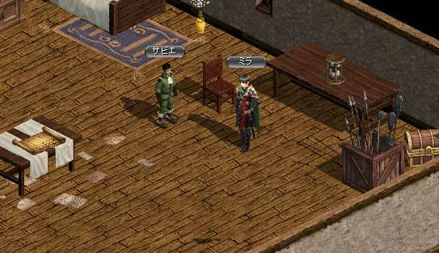 |
ガイド1051~のクエスト【ぶつかる双星第２部】で飛ぶ。 経験値が貰えるのでパワキを準備しよう！  【ミラ】と手を組む。 右下の扉から出るとすぐ経験値入る！ 【ミラ】と手を組む。 右下の扉から出るとすぐ経験値入る！ |
|---|
2. スミレを思い出せ
| 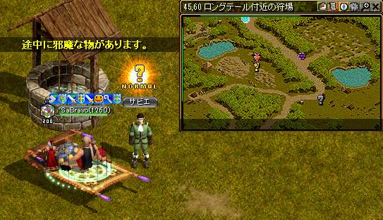 |
ガイド801~の狩場【ロングテール付近の狩場】へ飛ぶ。 【ロングテール右下】から出たMAPの【サビエ】と話す。 選択肢は2番のスミレ |
|---|---|
| 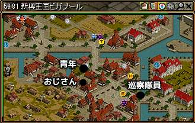 |
ピガプールに行き画像の？マーク。 青年、おじさん、隊員と話す。 青年【56.83】 おじさん【60.105】 隊長【107.123】 青年【56.83】 おじさん【60.105】 隊長【107.123】おじさんは家のかげに隠れてて見つかりにくかった！ |
| 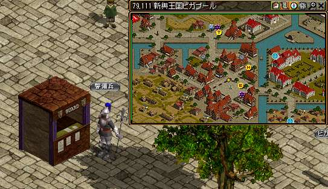 |
箱【79.110】 3人と話したらこの箱に触る。箱は２回触る！ |
| 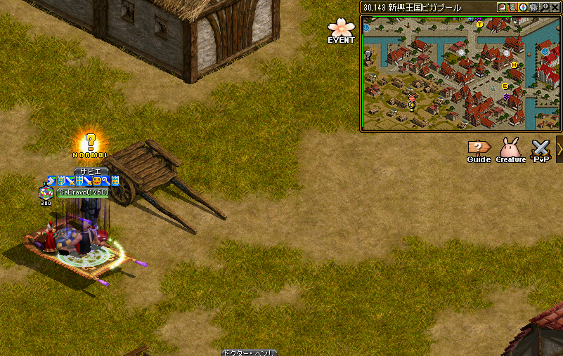 |
ビガプール左下の【サビエ】と会話 経験値が貰える！ |
3.潜入
| 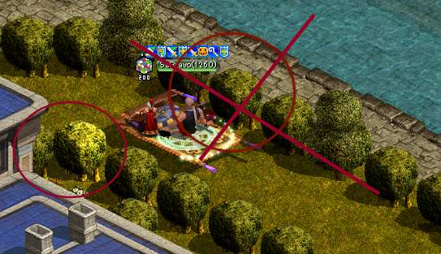 |
ガイド701~のクエスト【士官候補生の悩み】へ飛ぶ。 【ロングテール】に戻る。 植木【53.32】を触る 鍵を探しに行く 地下収容所B2,B3それぞれ倒してくる。 収容所B2：100体 / 収容所B3：300体 ※移動低下の状態異常喰らうので回復できる万病等あると便利 クエアップしたらもう一度【士官学校裏】の裏の植木をクリック |
|---|---|
| 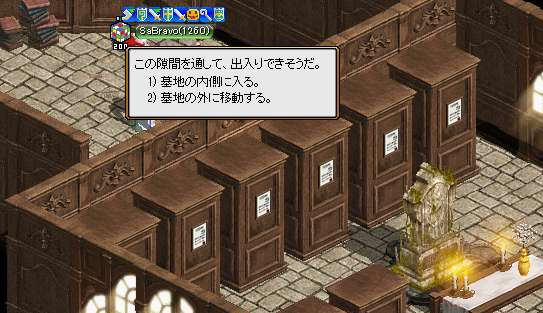 |
ガイド701~のクエスト【士官候補生の悩み】へ飛ぶ。 倒し終えたらガイドで植木へ 植木をクリックしたら、【シェイット士官学校】へ 中に入る。ここから墓地の内側へ |
| 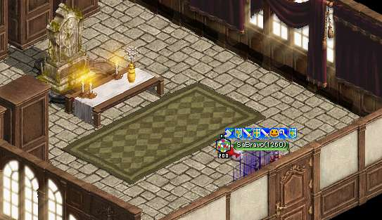 |
扉を触り会話を聞く |
| 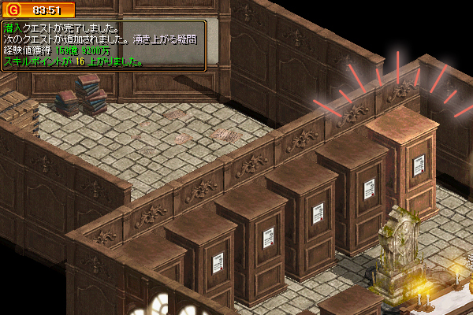 |
一番端の箱を触るとアブネールが出現 会話後、元来た道で帰る。 扉を触り会話を聞く 経験値が貰える！ |
4.湧き上がる疑問
|
ビガプールに戻り左下の【サビエ】と会話 |
|
| 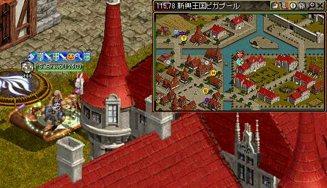 |
【ビガプール右上】の方にある【協会】へ |
5.公館の謎
| 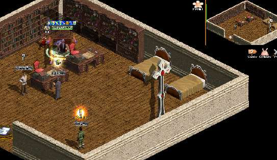 |
中に入り【公館管理人】と会話後、左側の本棚を3か所クリック |
|---|---|
| 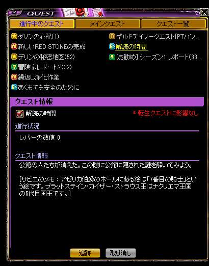 |
【サビエ】と会話 もう一度会話をするとNPCが全員消える マップ右上の壁をクリックするとレバーの数字を変えられる。現在の数字はクエスト欄で確認できる。ク レバーは(１が＋１０)(２が＋１)されるのでクエスト欄で確認しながら75にしてレバーを押し込むと中に入れるようになる １を７回 ２を５回 |
6.解読の時間
| 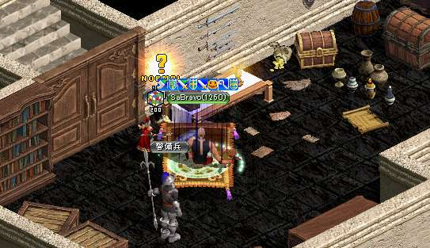 |
カビくさい部屋の中に入ったら机をクリック→NPC出現 【使用人】と会話後外へ強制で飛ばされる→【サビエ】と会話 ガイド1051~のクエスト【ぶつかる双星第２部】で飛ぶ。 【ミラ】に会いに行くので最初のガイド1051～で飛ぶ 風の羽等無くてガイドが使えない人は【ロングテール】右側の娼館内ネルラと会話で【ミラ】のいる部屋に行ける 【ミラ】と会話後神殿B2へ飛ばされる（経験値が入る）経験値が貰える！ |
|---|
7. 危機の兆し
| 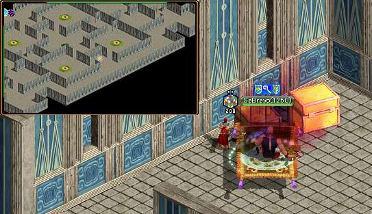 |
ポタ用意してから 【神殿B2】に到着後、敵を狩り危険物資を集める。 アイテムを集めたら箱を触る 箱【110.114】 もう一度触ると秘密ダンジョンへ |
|---|
8. 不協和音
| 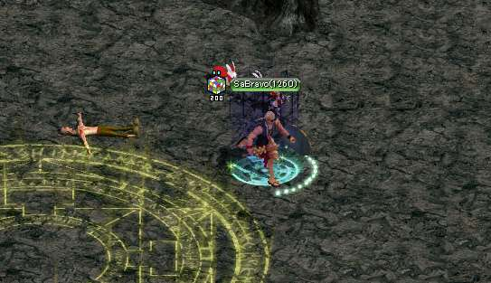 |
ダンジョン内に入ったら沸いてるモンスターを全部倒す 中央上の柱を触るの繰り返し 秘密終了後経験値が入る。 神殿B2に戻されるので【サビエ】と会話 ⚠️ 倒してから柱触っても次のモンスター出るまで少しラグがある 経験値が貰える！ |
|---|
9. 誤解を解く
| 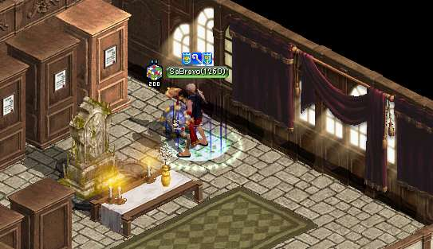 |
ガイド1051~のクエスト【ぶつかる双星第２部】で飛ぶ。 【ミラ】と2回会話 【サビエ】と会話→経験値経験値が貰える！ ガイド701~のクエスト【士官候補生の悩み】へ飛ぶ 【ロングテール】の【士官学校裏】からまた墓地へいく もういちど一番右の箱をクリック。 |
|---|
10. 煌めく双星
|
いつものちょっとしたムービーが少し流れる 【ミラ】のところに戻って会話→ 経験値が貰える！ エモーション獲得と生徒の指輪が強化 ～ 219億8900万 報酬 模範生徒の指輪 |